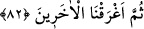
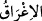
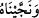
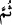
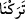

Keşfü’l-esrâr’da der ki: Nübüvvet ve peygamberlik imandan daha şerefli olduğu halde
burada özellikle imanın zikredilmesi, Nuh (a.s.)’ın değil, mü’minlerin şerefini beyan
etmek içindir. Bu durum, “Muhammed (a.s.) Haşimoğullarındandır” sözüne benzer.
Şüphesiz Hz. Peygamber (s.a.)’in âlemlere rahmet bir peygamber olması her şeyin
üstündedir. Ancak bu sözde daha çok Haşimoğullarının şeref ve itibarları anlatılmak
istenmektedir. Abbâs b. Atâ der ki, Resullerin mertebelerinin en aşağı olanı, nebilerin
mertebelerinin en yükseğidir. Nebilerin mertebelerinin en aşağı olanı ise sıddıkların
mertebelerinin en yükseğidir. Sıddıkların mertebelerinin en aşağısı da mü’minlerin
mertebelerinin en yükseğidir.
82. Nihâyet ötekileri (inanmayanları) suda boğduk.
“Nihâyet ötekileri” yani kavminden Nuh’a ve ehline muhalif olan kâfirlerin hepsini
“suda boğduk.”
Boğmak demek olan “__WORD__ kelimesi, 76. âyette geçen “Biz kendisini ... kurtardık”
anlamına gelen “__WORD__ ifadesine mâtuftur. Kurtarmakla boğmak arasındaki farklılıktan
dolayı atıf edatı olarak “__WORD__” (sonra) getirilmiştir. Bu âyetin “__WORD__ cümlesine atfedilmesi
durumunda da “__WORD__” atıf edatının konumu yine aynıdır; fakat burada erteleme mânâsında
değildir. Zira kurtarma ve sonrakilerde ismini bâkî kılma işi, boğmadan sonradır ki aksi
düşünülemez. Atıf edatının ifade ettiği erteleme de bunu gerektirir.
[211]. Bk. Müslim, “Salat”, 60.